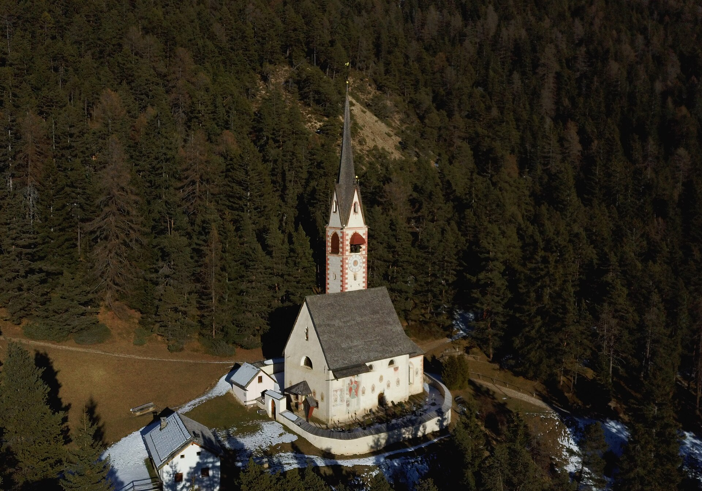

Dolomiti / Val Gardena
多洛米蒂
白云石山脉的拉丁山谷 · 以 Ortisei 为大本营的刀锋山脊与高山草甸
多洛米蒂是阿尔卑斯山脉的东北段，以法国地质学家 Déodat de Dolomieu 命名--因为这里的山由白云岩（dolomite）构成，风化后形成标志性的浅灰白色峰林与刀脊。2009 年整片山区列入 UNESCO 世界自然遗产。
Val Gardena（拉定语 Gherdëina）是多洛米蒂核心区的 U 型冰川谷：三座小镇--Ortisei（1,236m）、Santa Cristina（1,428m）与 Selva（1,563m）--沿谷地依次排布，每镇有缆车上山，公交贯穿全谷。谷内居民说拉定语（Ladin）：一种从罗马时代通俗拉丁语直接演化来的语言，与德语和意大利语并行为官方语言。
海拔谷地 1,236-1,563 米
UNESCO2009 年（自然遗产）
语言Ladin / Deutsch / Italiano
人口谷内约 9,000（三镇合计）
最近机场Bolzano（BZO）/ Innsbruck（INN）
10 月气温谷地 5-15°C / 山顶 -2 至 5°C
住宿推荐
- 首选：Ortisei 镇中心--缆车站步行 5 分钟、主街餐厅商店俱全、Bus 350 总站；适合无车自由行
- 次选：Ortisei 镇郊 B&B / 农庄（Roncadic、Surasass 区）--安静 + 山景早餐，步行或公交 10-15 分钟进镇
- 备选：Santa Cristina--比 Ortisei 便宜、更安静；有 Col Raiser 缆车直达 Seceda 山脊
- 滑雪季推荐：Selva--海拔最高、直通 Sella Ronda；但 10 月不如 Ortisei 完整
- 预订渠道：Booking.com 搜 "Ortisei" 或 "Val Gardena"；10 月属于淡旺季之间，提前 1-2 月有余量
- 多数酒店含半 board（早 + 晚餐）：山里晚上出门不便，半 board 通常比单订晚餐划算
- Guest Pass Mobilcard：入住即免费获得--南蒂罗尔全部公交与部分缆车免费，退房时交回
三镇分布
- Ortisei（1,236m）：最大镇、三条缆车（Seceda / Alpe di Siusi / Resciesa）、木雕博物馆
- Santa Cristina（1,428m）：中间镇、Col Raiser 缆车 + Monte Pana 椅梯、安静
- Selva（1,563m）：最高镇、Ciampinoi / Dantercepies 缆车、直通 Sella Ronda
- 公交 Bus 350 贯穿三镇（Ortisei ↔ Selva 约 20 分钟 / 约 30 分钟一班）
- 自驾：谷内公路畅通；Alpe di Siusi 草甸内禁车（停 Compatsch €10-15/天）
怎么到
- 火车：Milan/Venice/Verona → Bolzano（3-4h）→ Bus 350 → Ortisei（50 分钟）
- 自驾：从 Verona 约 2.5h（A22 高速 → Bolzano → SS242 山谷公路）；从 Venice 约 3h
- 飞机：最近机场 Bolzano（BZO）/ Innsbruck（INN）；大城市机场 Venice / Verona / Munich
- Bus 350 从 Bolzano 火车站外的公交岛发车，约 30-60 分钟一班，直达 Ortisei 镇中心
景点导览
Da Vedere · 6 处

观景
Seceda 刀锋山Seceda
多洛米蒂最像刀刃的山脊：2,519 米的白白云岩锯齿

花园
Alpe di Siusi 休斯高原Alpe di Siusi / Seiser Alm
欧洲最大的高山草甸：56 平方公里的花海与牛铃

地标
Val Gardena 山谷与缆车网络Val Gardena / Gröden
三座小镇、四条缆车、一张公交网：多洛米蒂大本营的使用说明书
古迹
多洛米蒂地质与自然遗产Dolomiti UNESCO World Heritage
两亿五千万年前的珊瑚礁，怎么变成了刀锋山脊

博物馆
拉丁语言区与木雕文化Ladin Valley & Woodcarving
三语并行的小镇、四百年的木雕传统、以及一群说着"活化石语言"的山民

观景
远郊一日游Day Trips from Ortisei
从 Ortisei 出发：三峰山、Braies 湖与 Great Dolomites Road
实用贴士
Consigli
- 10 月注意：缆车运营约至 10 月中（之后检修停运至 12 月滑雪季）；出发前一周查 val-gardena.net 确认
- 山谷天气多变：冲锋衣 + 保暖层 + 帽子是每日标配；山顶比谷地低 10-15°C
- 多数酒店含 Guest Pass Mobilcard（南蒂罗尔公共交通免费）：入住时索取
- 山区餐厅现金友好：部分小屋（Rifugio）不接受刷卡
- 10 月日照约 08:00-18:30：缆车首班约 08:30、末班约 17:00-18:00
- 超市：Ortisei 主街有小型超市（早餐补给）；大型超市在 Bolzano
- 自驾高海拔路面（Passo Gardena / Pordoi / Falzarego）10 月可能结冰：备防滑链
- 紧急电话 112；山区救援 118；旅游信息中心在 Ortisei 主街 Reziaplatz